居住類
放置於背包的最頂層
1.帳篷
在帳篷裡過夜可以恢復體力，儲備隔日攻頂的體力。
2.睡袋
睡覺時身體的熱能會被地面吸走，導致熱量散失，因此需要好的睡袋避免失溫。


ALTITUDE
M
LEVEL


 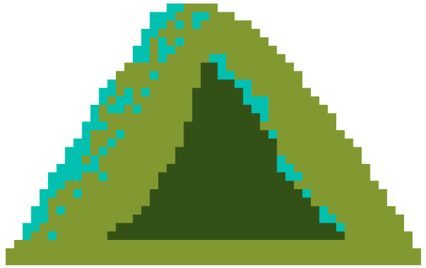
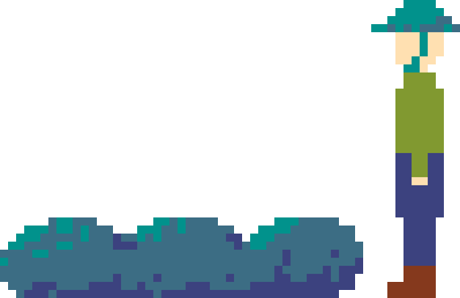
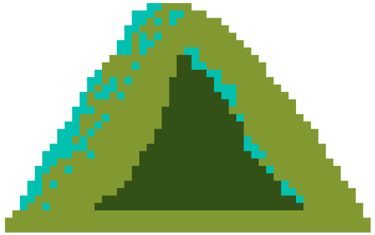
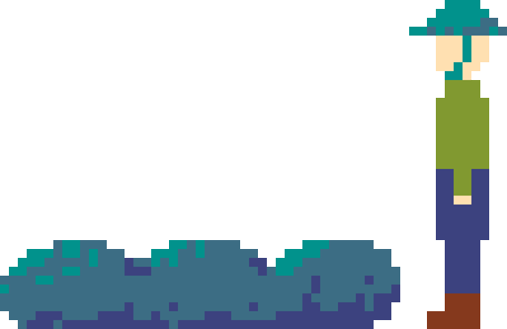
居住類
放置於背包的最頂層
1.帳篷
在帳篷裡過夜可以恢復體力，儲備隔日攻頂的體力。
2.睡袋
睡覺時身體的熱能會被地面吸走，導致熱量散失，因此需要好的睡袋避免失溫。
雜項
放置於背包的背層
1.垃圾袋
遇難時將自己套起來、挖出透氣小洞，就能變成一個簡易避難處，讓身體避免長時間處於淋濕或吹風的狀態，保持身體溫度。
2.電池
建議使用充電電池，較能夠掌握電量、對環境較友善，較不會有電池漏液的情況發生。
 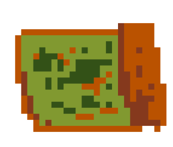
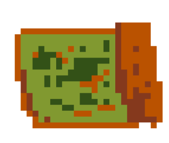

飲食安全求生
放置於背包的最下層
1.水
水分是維持人體正常機能的必須物質，在大量流汗的情況下，甚至得補充四～五公升。
2.紙本地圖
許多山難都是因為迷路造成的，若電子地圖沒電或壞掉了，就需要依靠紙本地圖。
3.繩索
遇到垂直的岩壁或是陡坡這些困難地形，就需要繩索來輔助攀爬。
4.手電筒
照明設備是登山裝備清單不可缺少的一樣物品，如果在山中摸黑行進，會增添許多危險和風險。


飲食安全求生
放置於背包的最下層
5.能量棒、鋁箔包快食
在步行中短暫休息時補充熱量用。因登山步行時間長，建議可攜帶高碳水、方便食用的食物。
6.指南針
在迷路且電子產品故障時，配合地圖尋求相對位置明了自己身處的位置。
7.急救包
包含個人習慣用藥、高山症藥物、止痛、止瀉藥及外傷用藥、包紮止血、繃帶、OK繃等。

烹煮器具
放置於背包中層的頂端
1.小刀
不論在準備食材、生火、或是急救時刻都會派上用場。
2.攻頂爐
體積、重量是登山爐中最輕的，為了輕裝攻頂用，適合個人使用。
3.打火機
相比之下噴槍打火機、電子打火機因為高山氧氣濃度較低，反而常常失靈。
4.蜘蛛爐
瓦斯接頭需透過瓦斯導管連接瓦斯罐，較穩固、承重高，適合多人使用。


行走類
放置於背包中層的中間
1.登山鞋
登山鞋較一般鞋款更加抓地也具有排泥功能，更提供對腳步的支撐性，也可防水排汗等，較一般布鞋更加耐用。
2.登山杖
登山杖可協助上下坡時減輕四隻的肌肉負擔，並適用於各種地形保持平衡與支撐。
 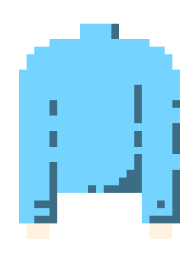
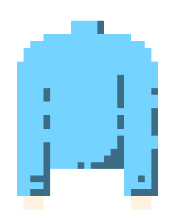

衣著類
放置於背包中層的最下方
1.內層 排汗衫
主要維持身體的乾爽，可以挑選合身、排汗性佳的材質。
2.中層 保暖衣
台灣的天氣潮濕，最需要注意的就是「防水」，否則衣服一濕就非常容易有失溫風險。
3.外層 防風水大衣
主要功能為儲蓄身體散發的熱能，防止失溫。
 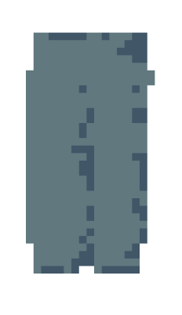
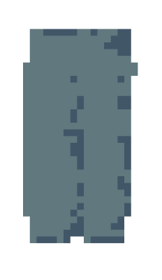
衣著類
放置於背包中層的最下方
4.保暖帽
保暖、防風的保暖帽，蓋住後腦勺、太陽穴才能真的有效溫暖頭部。
5.快乾登山褲
透氣、快乾、耐磨，適合行進中穿著。
6.雨衣
山上氣候千變萬化，防水雨衣、雨褲絕對是必備！


環形包紮法
用於小範圍等粗之肢體
1. 先做定帶，將繃帶以環形纏繞於傷口上方
2. 第一圈環繞稍作斜狀，大致傾斜45度
3. 將第一圈斜一角壓入環形圈內環繞第二圈

回反包紮法
用於包紮沒有頂端的部位如指端、頭部、截肢殘端
1. 傷口用無菌或乾淨的敷料覆蓋，固定敷料
2. 環形包紮兩周
3.
將繃帶向上反折與環形包紮垂直，覆蓋殘端中央，再交替覆蓋左右兩邊，固定住反折部分，每周覆蓋上周三分之一到二分之一
4. 再將繃帶反折環形包紮2周固定
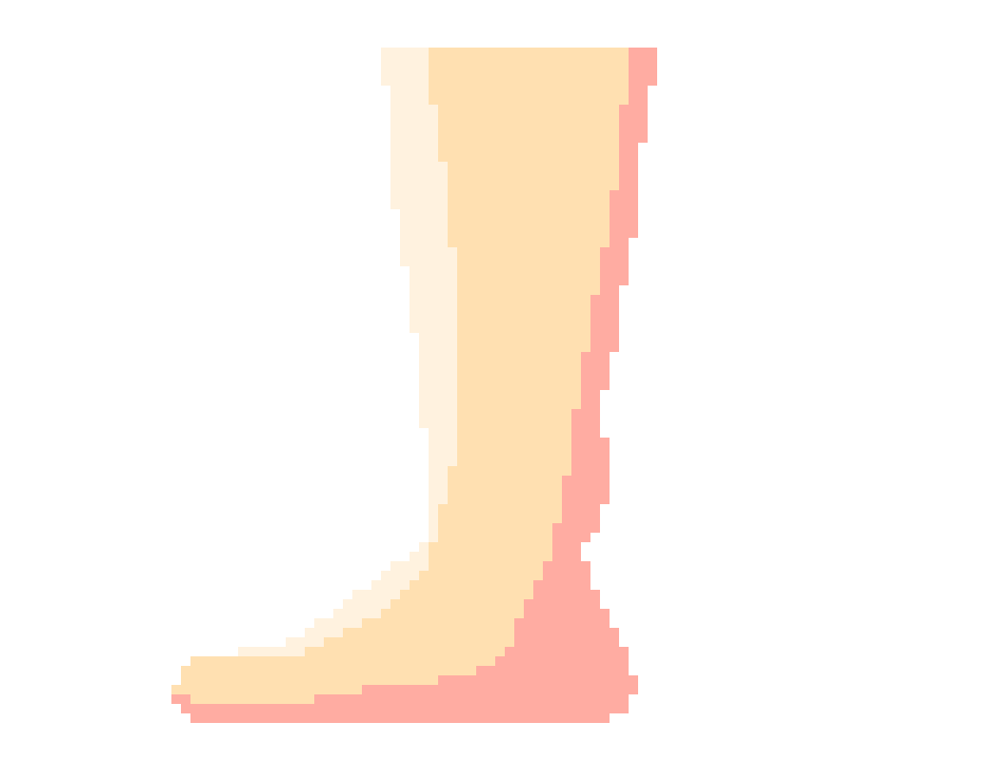
螺旋反折包紮法
應用肢體粗細不等處
1. 先按環形法纏繞兩圈
2. 將每圈繃帶反折，蓋住前圈三分之一或三分之二，由下而上地纏繞
3.
折返時按住繃帶上面正中央，用另一隻手將繃帶向下折返，再向後繞拉緊以環形包紮結束

八字包紮法
多用於手掌、踝部和其他關節處傷口
1. 包紮時從腕部開始，先環行纏繞兩圈
2. 經手和腕「8」字形纏繞。
3. 最後將繃帶尾端在腕部固定

螺旋包紮法
多用於粗細相同的肢體、軀幹處
1.
先按環形法纏繞兩圈，從第三圈開始每圈蓋住前圈三分之一或二分之一呈螺旋形
2. 最後以環形包紮結束